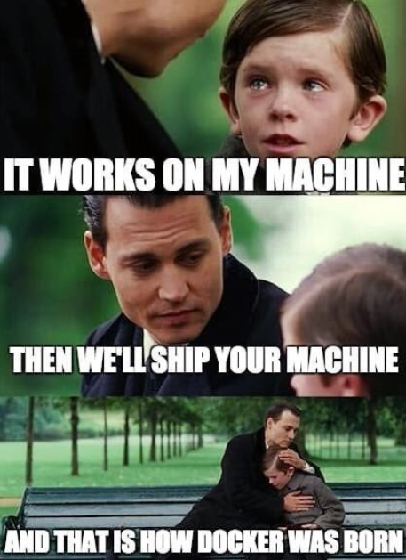
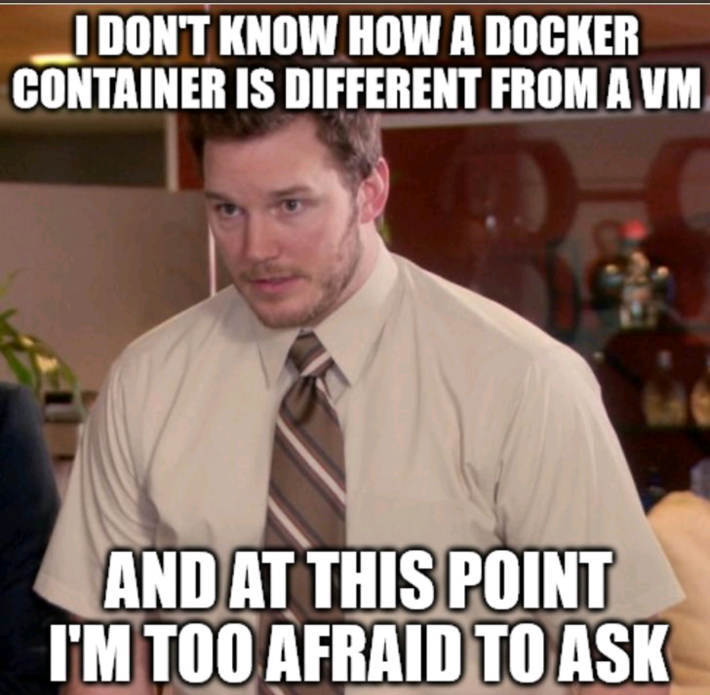
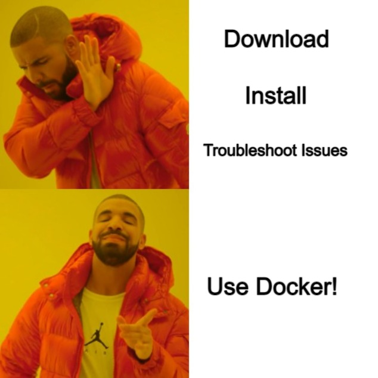
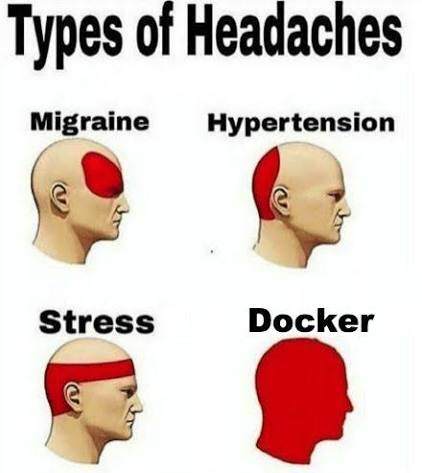
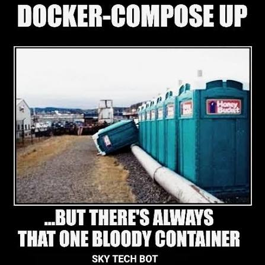
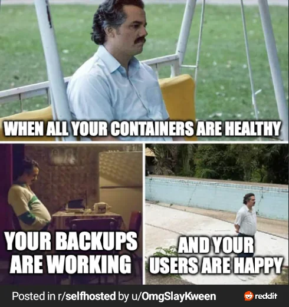

Your service is tested, secure, async, resilient, observable — and it runs on your machine. Today we fix the last gap: pack the app, its dependencies and its config contract into one image that runs identically on your laptop, CI, and prod. Think-first as always: every topic opens with a question, and the concepts you built in LLD-38/39 come back as one-line container features.
Module 4, session 10 — the finale. Every thread of this module ends in today’s box.
| # | Session | Focus |
|---|---|---|
| 3–6 | Auth 1–4 | identity: passwords, JWT, OAuth, Django |
| 7 | Email & Message Queues | async work across many processes |
| 8 | Cloud-Native Patterns | config, discovery, resilience |
| 9 | Logging & Monitoring | logs, metrics, traces, alerts |
| 10 TODAY | Containerization | package once, run anywhere |
Three tiers in code/, each a small step up. They need Docker Desktop (free) — every command’s expected output is documented, so you can also read along without it.
cd code # tier 1 — your first container (one script, one Dockerfile) cd 01-first-container docker build -t hello-lld40 . docker run hello-lld40 docker run -e GREETING="config from outside" hello-lld40 # 12-factor, containerized # tier 2 — a real Django app, containerized properly cd ../02-django-docker docker build -t webapp . docker run -p 8040:8040 webapp # then: curl localhost:8040/ and /health docker logs $(docker ps -q -n 1) # JSON request lines on stdout (LLD-39!) # tier 3 — multi-container: Django + Redis, one command cd ../03-compose-stack docker compose up --build # web + redis + healthchecks + a volume
The oldest fight in software: dev says it works, ops says it 500s, and both are right.
ImportError, then missing env vars, then a Pillow crash. The code is IDENTICAL. What actually broke?requirements.txt pins Python packages — it says nothing about the Python version itself, OS libraries (libjpeg for Pillow!), env vars, or system config. Closer, but a fraction of the world.
Row by row — each first cell also explains what the thing IS. Guess what breaks before you click.
Click a row to reveal its cells — guess each first.
| What differs (and what it even is) | Your laptop | Prod server | What actually breaks |
|---|---|---|---|
| Python itself your code runs on whatever interpreter the machine has — brew (macOS’s package manager) installs fresh ones; Linux distros freeze one for years | 3.12.4 (brew, recent) | 3.9.2 (OS default, frozen for “stability”) | syntax & stdlib you used don’t exist there (match, tomllib) → SyntaxError/ImportError the moment it boots |
| OS libraries C libraries installed on the machine itself — libjpeg is the C library that actually decodes/encodes JPEGs; Python’s Pillow is just a thin wrapper calling it. pip installs the wrapper, NOT the C library | libjpeg 9e (via brew) | libjpeg 8 (old distro package) | Pillow was compiled against one version, loads another → install fails — or crashes only when a user uploads an image |
| Config & secrets .env = a local file of KEY=value pairs your app loads at startup (LLD-38); it’s gitignored, so prod never sees it — prod must inject real env vars instead | .env with 14 variables | 3 env vars set, no .env file | KeyError at startup if you’re lucky — silent fallback to a wrong default (wrong DB!) if you’re not |
| Services & mode DEBUG = Django’s dev mode (friendly error pages, lax checks); SQLite = the zero-setup file database for dev; Postgres = the real server database prod runs | DEBUG=true · SQLite | DEBUG unset · Postgres | SQLite forgave what Postgres won’t (types, constraints, case-sensitivity) → first real write fails; and DEBUG’s helpful error pages never existed in prod |
| Invisible tweaks PATH = the list of folders your shell searches to find commands — edits live in your personal shell profile (~/.zshrc), which no server ever reads | that PATH edit from 2024 you forgot | clean PATH | your deploy script’s command not found — the dependency nobody wrote down |
Before the commands: kill the biggest misconception in the room.

docker run is fork+exec plus some kernel bookkeeping.docker run -m 512m webapp and then ps aux ON THE HOST: your python process is right there in the list, plain as day. It just believes it’s PID 1 on a machine called a3f9c2 with 512 MB of RAM — because that’s all the kernel lets it see and use. The cgroup limit is your LLD-38 bulkhead, enforced by the kernel.brew install colima), Podman (daemonless, docker-compatible CLI), WSL2 + engine on Windows. Your Dockerfiles and compose files work unchanged on all of them — OCI standards at work.The image is the deliverable now — not a zip of code, but a frozen, runnable world. Its internal structure is the clever part.
docker push again — it uploads in 2 seconds. How?git pull, pray pip install works, restart, discover the server’s Python is older. Deploy day, image world: docker pull app:v43 && docker run — and rollback is docker run app:v42, the exact bytes that worked yesterday. Versioned environments, not just versioned code.
FROM python:latest means “whatever was newest at build time” — Friday’s build works, Monday’s breaks, and the Dockerfile never changed. Pin (python:3.12-slim) for reproducibility — the same reason LLD-38 pinned library versions in requirements.txt.Ten lines that bake the image. Two of the ten cause 90% of real-world pain — so both get a question.
COPY . . then RUN pip install -r requirements.txt. Every time you edit ANY Python file, the next build re-installs every package — 3 minutes. Why?COPY . . — and everything after it, pip included.COPY requirements.txt → pip install → COPY . .. Now code edits only rebuild the last, thin layer: 2-second builds.COPY . . shipped the project’s .env (real API keys) into the image, which got pushed to Docker Hub. They delete the file and push a new image. Problem solved?.dockerignore is the seatbelt: .env, venv, .git, __pycache__ never enter the build context at all.docker run -e API_KEY=... / compose environment: / k8s Secrets — exactly the 12-factor ladder from LLD-38.02-django-docker/ — this exact Dockerfile, heavily commented, on a real single-file Django app · run docker build -t webapp . · docker run -p 8040:8040 webapp# the same file, as text — read the comments in code/02-django-docker/Dockerfile FROM python:3.12-slim # pinned base — never :latest WORKDIR /app COPY requirements.txt . # deps first… RUN pip install --no-cache-dir -r requirements.txt # …so this layer caches COPY . . # code last — it changes hourly RUN useradd -m appuser USER appuser # containers get compromised too — don't be root when it happens EXPOSE 8040 HEALTHCHECK --interval=30s --timeout=3s CMD curl -f http://localhost:8040/health || exit 1 CMD ["python", "webapp.py", "runserver", "0.0.0.0:8040", "--noreload"]
CMD). The HEALTHCHECK line is LLD-38’s liveness idea shipped IN the artifact — any platform that runs this image knows how to ask “are you ok?”.CMD | ENTRYPOINT | together | |
|---|---|---|---|
| means | the DEFAULT command | the FIXED command | ENTRYPOINT = program, CMD = default args |
docker run img | runs CMD | runs ENTRYPOINT | runs ENTRYPOINT + CMD |
docker run img sh | replaces CMD → runs sh | appends → runs ENTRYPOINT sh | replaces only the args |
| use when | app containers (ours!) — easy to override for debugging | CLI-tool images (docker run mytool --help) | tools with sensible defaults |
["python", ...]). Reach for ENTRYPOINT when the image IS a command-line tool. Knowing the override behaviour (row 3) is what interviewers actually probe.# stage 1: the kitchen — build tools allowed, mess allowed FROM python:3.12 AS builder WORKDIR /app COPY requirements.txt . RUN pip install --prefix=/install -r requirements.txt # compiles C extensions etc. # stage 2: the dining room — only the finished dishes enter FROM python:3.12-slim WORKDIR /app COPY --from=builder /install /usr/local # ONLY the installed packages cross over COPY . . USER nobody CMD ["python", "webapp.py", "runserver", "0.0.0.0:8040", "--noreload"]
-slim bases (full Debian − docs/toolchains). alpine is smaller still but uses musl instead of glibc — some wheels don’t exist for it and pip falls back to compiling; try slim first.apt-get update && apt-get install -y X && rm -rf /var/lib/apt/lists/* in ONE line, or the cleanup lands in a separate layer and saves nothing.Three things every running container needs decided: where its data lives, where its config comes from, and who can reach it.
/app/uploads/. Ops redeploys the new version Tuesday night. Wednesday: every upload is gone. What happened?docker run -v uploads-data:/app/uploads — a named volume on the host, mounted in; survives any number of redeploys. (Prod-grade answer for uploads specifically: object storage like S3.)docker run -e GREETING="config from outside" hello-lld40 — same image, different behavior, zero rebuilds.-p 8040:8040 (host:container) is the ONE door you open. Nothing is reachable unless mapped — secure by default.| You want to… | Command | Notes |
|---|---|---|
| build an image | docker build -t app:v1 . | -t = name:tag; . = build context |
| run it | docker run -p 8040:8040 -e KEY=val app:v1 | -d detaches; --rm auto-cleans |
| see what’s running | docker ps (-a incl. stopped) | names + ports + status at a glance |
| read its stdout | docker logs -f <name> | -f follows — your LLD-39 JSON lines |
| shell inside | docker exec -it <name> sh | look around a LIVE container |
| live CPU/mem | docker stats | the cgroup gauges, in your terminal |
| stop & remove | docker stop <name> && docker rm <name> | stop = SIGTERM, 10s, SIGKILL |
| reclaim disk | docker system prune | deletes stopped containers + dangling layers — read its prompt! |

docker logs; run foreground servers (our --noreload runserver stays in front).0.0.0.0 (not 127.0.0.1 — that’s loopback INSIDE the container) and the port must be mapped with -p. Our CMD says 0.0.0.0:8040 for exactly this reason.docker ps, stop it, or map a different host port (-p 8041:8040).docker build) and re-run; the image froze your code at build time. (Dev-loop fix: bind-mount the source, -v $(pwd):/app.)01-first-container/ & 02-django-docker/ READMEs walk every one of these commands with expected output · run see code/Real apps are web + database + cache. Starting three containers by hand with the right network, order and volumes — every morning — is a job for a file, not a human.
web with depends_on: [db]. docker compose up — and web still crashes with “connection refused” to Postgres, but only sometimes. Why?depends_on: {db: {condition: service_healthy}} — now compose waits for READINESS, not just start. (Belt-and-braces: the app also retries its DB connection — LLD-38 resilience.)
# code/03-compose-stack/docker-compose.yml — the whole demo stack
services:
web:
build: .
ports: ["8040:8040"]
environment:
- REDIS_HOST=redis # the SERVICE NAME is the hostname (DNS!)
depends_on:
redis:
condition: service_healthy # wait for READY, not just started
redis:
image: redis:7-alpine # pinned, like every image
healthcheck:
test: ["CMD", "redis-cli", "ping"]
interval: 5s
volumes:
- redis-data:/data # the counter survives down/up
volumes:
redis-data:docker compose up --build is the whole morning routine now — and the file is the documentation.git clone, docker compose up — coffee still warm. The compose file IS the onboarding doc, and it can’t go stale because it’s executed daily.03-compose-stack/ — Django + Redis page-counter: watch the counter survive down/up (volume) and reset on down -v · run docker compose up --buildLast class ended at logs. The metrics-and-alerting half lives HERE instead — main ideas only, question-first, answers drawn as diagrams.
/var/log/app.log (rotated, tidy, like the old VM days). What’s wrong with this in the container world?docker logs shows it working.errors/requests > 5% FOR 10m → page (+ runbook link). A user-facing ratio (survives traffic spikes; 50 errors means nothing without traffic) + a threshold + a duration (one bad second is normal — sustained breach is an incident) + a runbook. Slow-burning causes (disk 82%, growing 1%/day) become tickets, not pages — every false page trains the on-call to ignore the next one.-m 512m. At 2 AM it dies: exit code 137, NO traceback, no ERROR log — then restarts and dies again an hour later. The error-rate alert pages you. Which dashboard number would have warned you HOURS earlier?docker stats → cAdvisor → Prometheus — USE applied to cgroups. Metrics and containers are one story./health, which returns 200 if the process is up. Redis goes down; the app can’t serve a single real request — but every healthcheck passes and traffic keeps flowing. What’s the design fix?if statement in your /health view.
Compose manages containers on ONE machine. The moment you need many machines, self-healing and zero-downtime deploys, you’ve outgrown it — by design.
| Era | What appeared | Why it mattered |
|---|---|---|
| 1979–2007 | chroot → FreeBSD jails → Linux namespaces + cgroups (Google) | the kernel ingredients existed for decades — unassembled |
| 2013 | Docker | assembled them + the IMAGE format + registry UX; containers went from wizardry to docker run |
| 2014 | Kubernetes (Google’s Borg, open-sourced) | the multi-host scheduler; donated to found the CNCF (LLD-38’s ecosystem starts HERE) |
| 2015 | OCI standard | image & runtime specs standardized — no vendor lock on the box itself |
| 2016–now | containerd · Podman · BuildKit · Fly/Cloud Run/Fargate | Docker-the-company faded; docker-the-format won everything — serverless containers run YOUR image without you seeing a server |
# deployment.yaml — "keep 3 replicas of this image alive"
apiVersion: apps/v1
kind: Deployment
metadata: { name: web }
spec:
replicas: 3
selector: { matchLabels: { app: web } }
template:
metadata: { labels: { app: web } }
spec:
containers:
- name: web
image: registry.example.com/web:v42 # the SAME image you built today
ports: [ { containerPort: 8040 } ]
readinessProbe: { httpGet: { path: /health, port: 8040 } } # LLD-38/39!
resources: { limits: { memory: "512Mi" } } # cgroups!
---
# service.yaml — "one stable name routing to healthy pods"
apiVersion: v1
kind: Service
metadata: { name: web }
spec:
selector: { app: web }
ports: [ { port: 80, targetPort: 8040 } ]minikube or kind — k8s in a container on your laptop.Container questions are judgment questions: do you know what the box IS, and when each tool stops being enough.
🎯 What they’re really testing: The #1 filter question — they’re listening for ‘process’, not ‘lightweight VM’.
🎯 What they’re really testing: Layer-cache literacy — the single most practical Dockerfile skill.
🎯 What they’re really testing: Whether your observability knowledge survives contact with the platform.
🎯 What they’re really testing: Judgment over hype — a favourite senior-round question.
The AI stack didn’t replace the box — it became its biggest customer.
rm -rf / and a crypto-miner. Damage: one disposable container with no network and a 256 MB cap, deleted 4 seconds later. The 1979 chroot idea, 2026’s hottest safety feature.01-first-container/. Then run the image twice and explain (out loud) why the hostnames differ.02-django-docker/. Edit one line of webapp.py, rebuild, and READ the build output: which layers said CACHED? Now move COPY . . above pip install, rebuild, and feel the difference.03-compose-stack/; curl the counter a few times; docker compose down && up (counter survives — why?); down -v (why did it reset?). Then kill redis and watch /health flip to 503.mem_limit: 64m to web in the compose file and load it until it OOM-kills. Find the 137. Which gauge would have warned you?Bundled with this class: a 7-part reference guide (history → commands → Desktop alternatives → Dockerfiles → hands-on lab → Kubernetes → cheat sheet) and a one-page fundamentals summary — use them for revision after the interactive pass.
🔗 Containerization guide (7 parts) ↗ 🔗 Docker fundamentals — one-page summary ↗Look at the arc you just walked: testing → auth → async work → cloud-native patterns → observability → containers. That IS the modern backend engineer’s toolkit — not as vocabulary, but as things you’ve run, broken, and fixed. Next: revision, interview drills, and your capstone — bring questions.